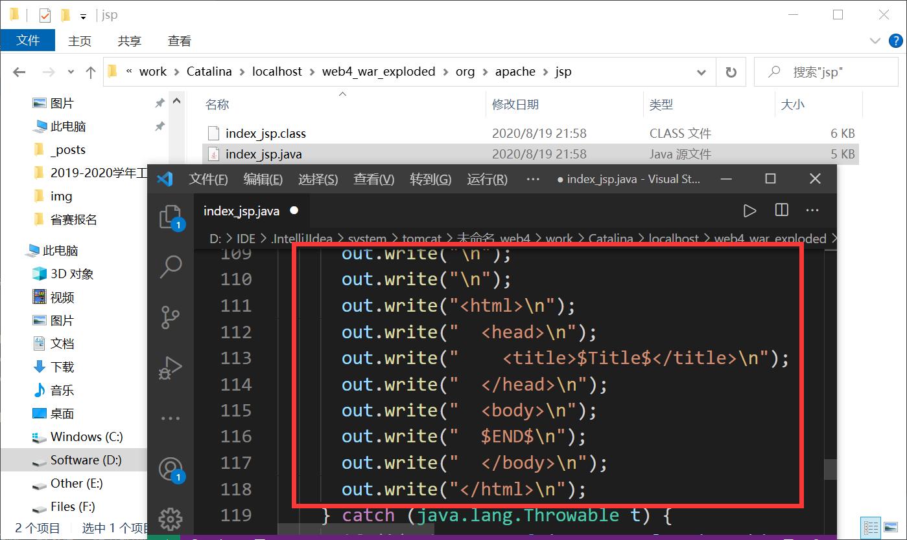
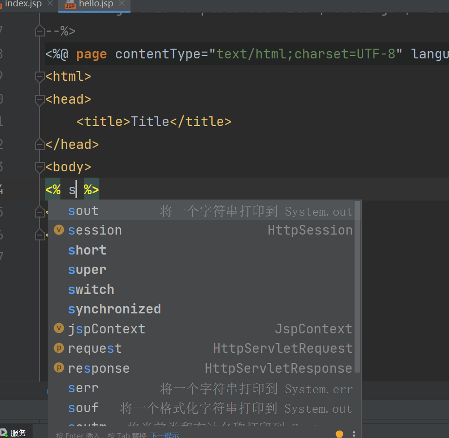
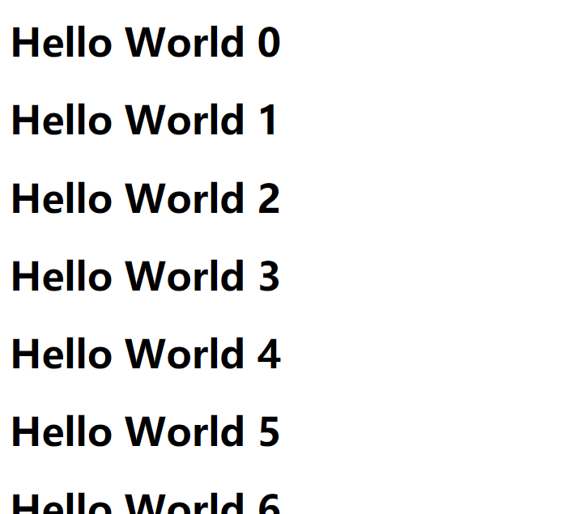

初识JSP
什么是Java Server Pages?
JSP 简介 | 菜鸟教程 (runoob.com)
JSP全称Java Server Pages，是一种动态网页开发技术。它使用JSP标签在HTML网页中插入Java代码。标签通常以<%开头以%>结束。
JSP是一种Java servlet，主要用于实现Java web应用程序的用户界面部分。网页开发者们通过结合HTML代码、XHTML代码、XML元素以及嵌入JSP操作和命令来编写JSP。
JSP通过网页表单获取用户输入数据、访问数据库及其他数据源，然后动态地创建网页。
JSP标签有多种功能，比如访问数据库、记录用户选择信息、访问JavaBeans组件等，还可以在不同的网页中传递控制信息和共享信息。
本质
其本质还是servlet


JSP的基础语法
JSP表达式
- 作用：将程序的输出，输出到客户端
- 语法：
<%= 表达式%>
1
| <%= new java.util.Date()%>
|

1
2
3
4
5
6
7
8
9
10
11
12
13
14
15
16
17
18
19
20
21
22
23
24
25
26
27
28
29
30
31
32
| out.write("\r\n");
out.write("\r\n");
out.write("<html>\r\n");
out.write("<head>\r\n");
out.write(" <title>Title</title>\r\n");
out.write("</head>\r\n");
out.write("<body>\r\n");
out.print( new java.util.Date());
out.write('\r');
out.write('\n');
int sum = 0;
for (int i = 0; i < 100; i++) {
sum += i;
}
out.println("<h1>"+sum+"</h1>");
out.write('\r');
out.write('\n');
for (int i = 0; i < 100; i++) {
out.write("\r\n");
out.write("<h1>Hello World ");
out.print(i);
out.write("</h1>\r\n");
}
out.write("\r\n");
out.write("</body>\r\n");
out.write("</html>\r\n");
|
JSP声明
jsp声明会被编译到java类中，其他的会被生成到jspService方法中
1
2
3
4
5
6
7
8
9
| <%!
static {
System.out.println("Loading Servlet");
}
private int globalVar = 0;
public void kkk(){
System.out.println("进入了kkk方法");
}
%>
|
EL表达式
EL表达式详解_浅然的专栏-CSDN博客_el表达式
- 如果EL表达式无效，需要在头部配置
1
| <%@page isELIgnored="false" %>
|
1
| <%@page errorPage="error/errorPage.jsp" %>
|
1
2
3
4
5
6
7
8
9
10
| <web-app>
<error-page>
<error-code>404</error-code>
<location>/error/errorPage.jsp</location>
</error-page>
<error-page>
<error-code>500</error-code>
<location>/error/errorPage.jsp</location>
</error-page>
</web-app>
|
1
| <%@include file="index.jsp" %>
|
1
| <jsp:include page="index.jsp"/>
|
1
2
3
4
5
6
| <%
pageContext.setAttribute("name1", "HUII");
request.setAttribute("name2", "HUII");
session.setAttribute("name3", "HUII");
application.setAttribute("name4", "HUII");
%>
|
1
2
3
4
5
6
7
8
9
10
11
12
13
| <%
String name1 = (String) pageContext.findAttribute("name1");
String name2 = (String) pageContext.findAttribute("name2");
String name3 = (String) pageContext.findAttribute("name3");
String name4 = (String) pageContext.findAttribute("name4");
String name5 = (String) pageContext.findAttribute("name5");
%>
<h1>取出的值</h1>
<h3>${name1}</h3>
<h3>${name2}</h3>
<h3>${name3}</h3>
<h3>${name4}</h3>
<h3>${name5}</h3>
|
1
2
3
| <%
pageContext.forward("/success.jsp");
%>
|
1
| <%@include file="index.jsp" %>
|
1
2
3
| <jsp:forward page="index.jsp">
<jsp:param name="value" value="valvalue"/>
</jsp:forward>
|
1
| <%=request.getParameter("value")%>
|
1
| <%@ taglib prefix="c" uri="http://java.sun.com/jsp/jstl/core" %>
|
JavaBean
实体类
JavaBean有特定的写法
- 必须有一个无参构造
- 属性必须私有化
- 必须有对应的get/set方法
一般用来和数据库的字段做映射 ORM
ORM：对象关系映射
1
2
3
4
5
6
7
8
9
10
11
12
13
14
15
16
17
18
19
20
21
22
23
24
25
26
27
28
29
30
31
32
33
34
35
36
37
38
39
40
41
42
43
44
45
46
47
48
49
50
51
52
53
54
55
56
57
| package top.huii.pojo;
public class People {
private int id;
private String name;
private int age;
private String address;
public People(int id, String name, int age, String address) {
this.id = id;
this.name = name;
this.age = age;
this.address = address;
}
public int getId() {
return id;
}
public void setId(int id) {
this.id = id;
}
public String getName() {
return name;
}
public void setName(String name) {
this.name = name;
}
public int getAge() {
return age;
}
public void setAge(int age) {
this.age = age;
}
public String getAddress() {
return address;
}
public void setAddress(String address) {
this.address = address;
}
@Override
public String toString() {
return "People{" +
"id=" + id +
", name='" + name + '\'' +
", age=" + age +
", address='" + address + '\'' +
'}';
}
}
|